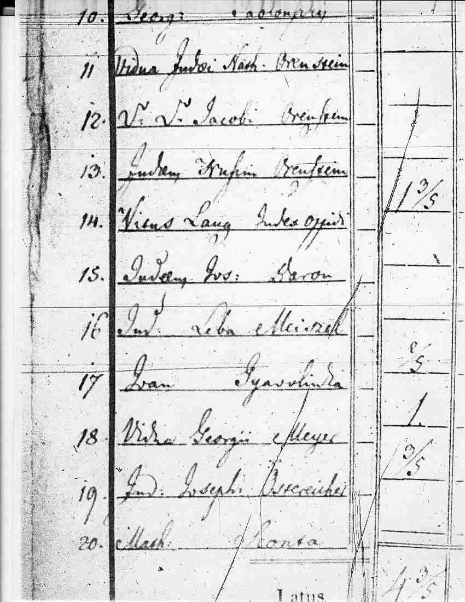

The 1828 Hungarian Property Tax Census (the “Census”), in Hungarian known as Vagyonösszeirás - 1828, is a census of individuals owning taxable property. The Census listed the individuals and their taxable holdings. Entries were handwritten in the Latin language and column headings on the Census forms were pre-printed in Latin. The entire country of Hungary was included. Records are arranged by counties, and within the counties by localities in alphabetical order. County and town names are the Hungarian names in use in 1828. A sample of the name entries appears at the right -- click the image for a larger view.
The Census was created by the Hungarian Government and the original records reside in the National Archives of Hungary. The entire Census has been microfilmed by the Church of Jesus Christ of Latter-day Saints (LDS) and comprises 319 microfilms. These microfilms are listed in the Family History Library Catalog (FHLC) of the LDS. They may be found as Place (Hungary); Topic (Hungary-Census); Title (Vagyonösszeirás, 1828). You may also try the hyperlink below:
JewishGen Hungarian Special Interest Group (H-SIG), serving as transcribers, data entry, and validators. We greatly appreciate their efforts in this endeavor.
Data from the Census was transcribed into a Microsoft Excel spreadsheet. Diacritical marks for place names, surnames and given names were ignored.
The database is displayed in six columns:
Surname, Given Name -- Contains the surname and given name of the individual. Because of difficulties in reading the old handwriting, some letters were difficult to decipher. Where multiple possibilities exist for interpreting a name, they were entered using a question mark and slash symbol to separate each possible name, as in “Stein?/Stern?”, or “Leiba?/Leibe?”. The search engine will allow the use of any of these possible names as a search term. A single question mark in a name field indicates a name appeared in the Census, but we could not decipher it. A single dash in a name field indicates no name was shown in the Census.
County / Town -- Identifies the county and town in which the individual lived. We transcribed town and county names exactly as they appear in the Census. We did not attempt to modernize or translate the locality name.
Entry Number -- Shows the handwritten entry number which appears to the left of each name in the Census.
LDS Microfilm # -- Provides the microfilm number at the LDS Family History Library, which the researcher can use to locate the individual in the original Census.
Comments -- Used for various notations. In this column we indicated those entries which were listed as widows or widowers (identified in the original data by the Latin terms “vidua” or “relicta” and “viduus” or “relictus”, respectively, or by their abbreviations). Column 6 also marks those entries not identified as Jewish. The term “J?” indicates those names that did not have the Latin term “Jud” or its equivalent next to the name entry in the Census. In a few instances, a Latin word may have accompanied the name. These have been noted in Column 6. Finally, Column 6 was used to indicate the uncertainty of some single name entries as to whether they were surnames or given names.
The total number of records in the database is 29,969. See the table of counties below. Based on various sources, including page 26 of Robert Perlman’s Bridging Three Worlds, there were 185,000 Jews in Hungary in 1825. However, since the 1828 Hungarian Property Tax Census was limited to taxpayers only, far fewer than this actually appeared in the Census.
Names from the original Census were entered exactly as they appeared on the list. If the name was abbreviated, it was transcribed exactly as abbreviated. We could not be certain if “Abr.” is Abram or Abraham, or if “Mich.” is Michel or Michael. No changes were made in the spellings of the name, either.
All diacritical marks (the little accent marks used above certain letters) were ignored. This simplified transcription and data entry. Their only function is to guide pronunciation, which was not necessary in the construction of the database.
For names which could only partially be deciphered, we entered as many letters as we could, substituting a dash “-” for each letter that could not be read. Sometimes it was hard to tell exactly how many letters are in a name, so the number of dashes may not accurately reflect the number of missing letters. If the name was totally illegible, we put a single question mark in the appropriate column. A single dash in a surname or given name column denotes that no surname or given name was provided in the Census.
Sometimes, the same name can be used as a surname or a given name, such as “Joseph” or “David.” We were careful when transcribing a name such as “David Joseph” to enter the correct given name and surname in their respective columns. By noting the order of names above and below the one in question, we could identify which was most likely the surname and which was most likely the given name. This did become problematic in those cases where there was only one name given. In those cases where the single name could be either a given name or surname, we made two entries. One entry treated the single name as a surname, and the other treated the name as a given name. A notation was made in Column 6 indicating this uncertainty.
If two surnames appeared, such as a maiden name and a married name for a woman, both names were entered using a slash “/” mark between them. The search engine will allow the use of either name as a search term.
We recognize that some names in the database are incomplete or incorrectly deciphered from the microfilm. If you are viewing a microfilm and are familiar with a name that we have entered partially or incorrectly in the database, we would appreciate receiving your recommended corrections. Please send your feedback directly to the Coordinator, Eric M. Bloch, bloch@wi.rr.com.
Please note that the number of entries in the table below is not exactly equivalent to the number of Jewish names in the Census. In some cases, names appearing in the Census have been entered into our database multiple times, but in different forms. For example, a single name like "Israel" appearing in the Census could be either a surname or given name. Since we do not know for certain which it is, we have entered it into our database twice, once as a surname with no given name, and once as a given name with no surname. Hence, the number of entries in our database is going to be higher than the actual number of entries in the Census.
|
|
|||||||||||||||||||||||||||||||||||||||||||||||||||||||||||||||||||||||||||||||||||||||||||||||||||||||||||||||||||||||||||||||||
The 1828 Hungarian Property Tax Census Database can be searched via the JewishGen All Hungary Database interface.
The database is searchable by community or surname using either one of three options: 1) Exact spelling, 2) D-M Soundex, or 3) Global Text search.
In addition to the usual search of surnames and towns, you can use the global text search of all fields to find all entries for a particular county (megye), given name, or LDS film number.
If you are searching for a hyphenated town name or county, you must enter only the name before the hyphen or after the hyphen, but not both. At this time, the search engine is not capable of handling hyphenated names. JewishGen technicians are working on this problem.
Approximately two or three percent of the surnames in the database have unknown letters and are thus not complete. In order to find these incomplete names, you may want to conduct a global search of the entire county or town.